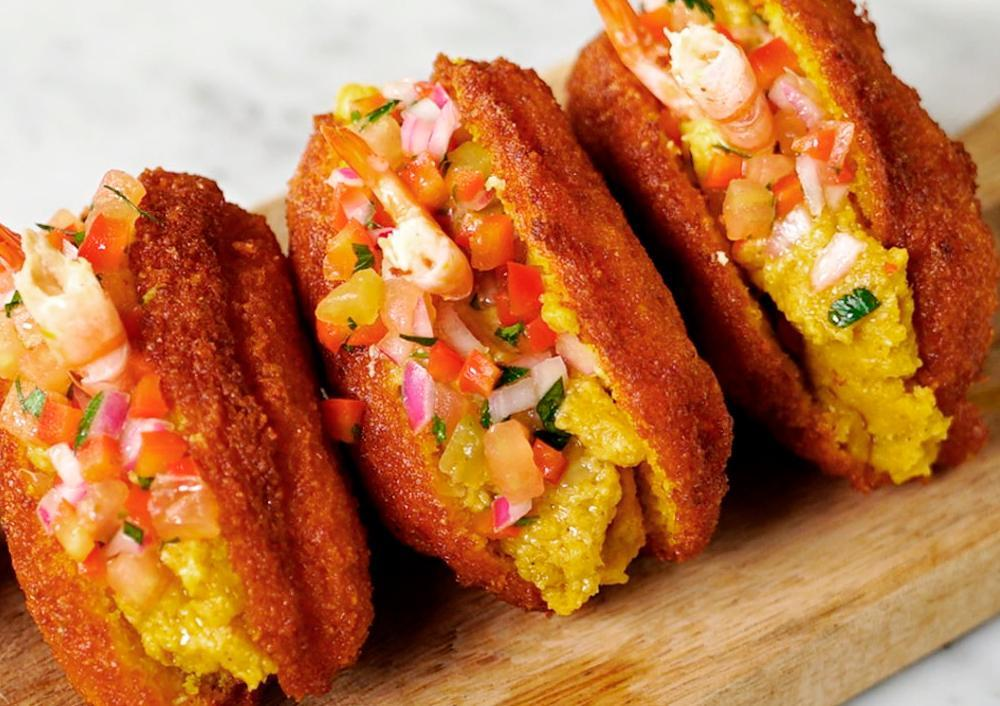

A culinária baiana é a que mais demonstra a influência africana nos seus pratos típicos como acarajé, caruru, vatapá e moqueca. Estes pratos são preparados com o azeite-de-dendê, extraído de uma palmeira africana trazida ao Brasil em tempos coloniais. Na Bahia existem duas maneiras de se preparar estes pratos; numa, mais simples, as comidas não levam muito tempero e são feita nos terreiros de candomblé para serem oferecidas aos orixás. Na outra maneira, empregada fora dos terreiros, as comidas são preparadas com muito tempero e são mais saborosas, sendo vendidas pelas baianas do acarajé e degustadas em restaurantes e residências.
Além dos pratos já conhecidos pela população brasileira, é possível notar semelhanças entre os ingredientes como a farinha de mandioca, que é usada na preparação do Funge, acompanhamento da preparação angolana conhecida como Moamba de Galinha. O preparo da receita você encontra no vídeo abaixo: